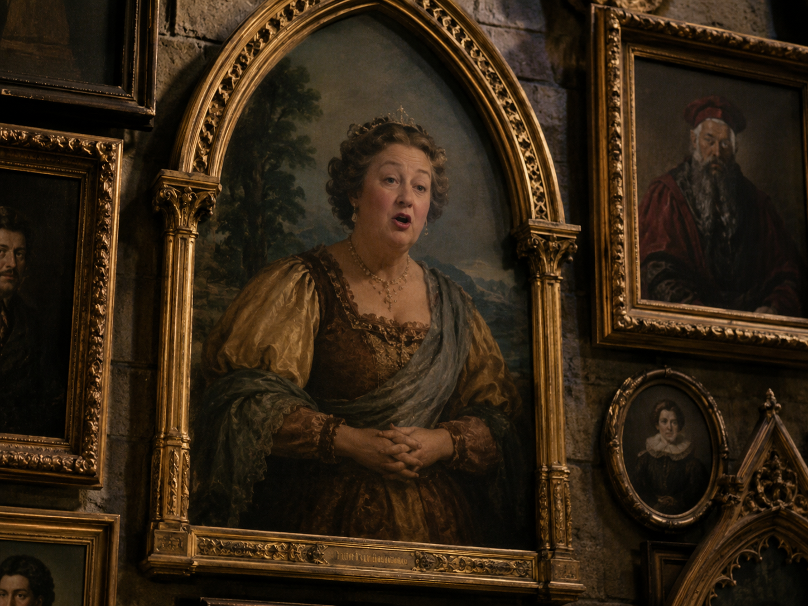
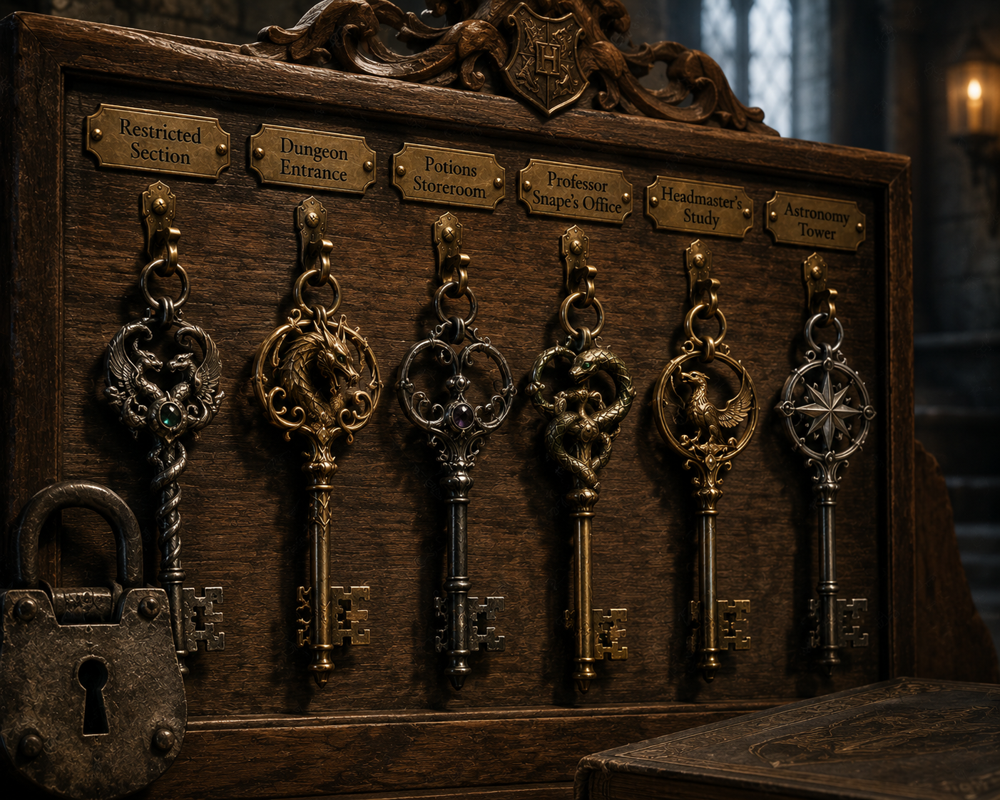

SECRETS IN STONE
For over a thousand years, Hogwarts School of Witchcraft and Wizardry has stood as a bastion of magical education and protection. The castle itself is arguably the greatest magical artifact in Britain. Imbued with the enchantments of the four founders, its stones are steeped in history, its corridors guarded by sentient armor, and its walls lined with watchful, whispering portraits.
Within this grand fortress lie relics of unimaginable value. Some are artifacts crafted by the founders themselves, carefully passed down through centuries. Others are enchanted objects that breathe life into the school, from the hourglasses that record student triumphs to the moving staircases and floating candles that define the very atmosphere of the Great Hall.
I. HOGWARTS HEIRLOOMS

THE SWORD OF GRYFFINDOR
Forged a millennium ago by goblins, the magical sword of Godric Gryffindor is fashioned from pure silver and inset with brilliant rubies. As a goblin-made artifact, it does not require cleaning and only imbibes that which makes it stronger.
Because Harry Potter used the sword to slay a Basilisk in the Chamber of Secrets, the blade became imbued with incredibly potent Basilisk venom, rendering it one of the few weapons capable of destroying a Horcrux. It famously presents itself to any true Gryffindor in a time of desperate need.
THE FOUNDERS' RELICS
Each of the four founders of Hogwarts left behind a physical artifact deeply tied to their legacy. While Godric Gryffindor left his sword and the Sorting Hat, the other three left behind the Locket of Slytherin, the Cup of Hufflepuff, and the Diadem of Ravenclaw.
These incredibly rare and powerful objects were symbols of the founders' magical prowess. Tragically, all three were stolen and corrupted by Tom Riddle, who turned these revered historical treasures into vile Horcruxes.


THE HOUSE CUP
A grand, gleaming trophy awarded at the end-of-year feast to the Hogwarts house with the most points. It represents a year's worth of academic excellence, bravery, and good behavior—or conversely, the avoidance of rule-breaking.
The winning house's colors are magically draped across the Great Hall, providing a tremendous source of pride for the students. The competition for the House Cup is fiercely contested, particularly between Gryffindor and Slytherin.
HOUSE POINT HOURGLASSES
Four giant hourglasses located in the Entrance Hall of Hogwarts. They record the points awarded and deducted from each house throughout the school year. They are not filled with sand, but with precious gemstones: rubies for Gryffindor, sapphires for Ravenclaw, emeralds for Slytherin, and diamonds for Hufflepuff.
The enchantments on the hourglasses are incredibly sensitive, automatically adjusting the gem levels the moment a teacher or prefect awards or deducts points, acting as a constant, visual reminder of each house's standing.

II. CASTLE ENCHANTMENTS

THE WINGED KEYS
A mesmerizing flock of keys enchanted by Charms Master Filius Flitwick to guard the Philosopher's Stone. Given delicate, shimmering wings, they flutter violently near the ceiling of a high-vaulted stone chamber.
To pass through the chamber's heavy wooden door, one must mount a broomstick and catch the correct, old-fashioned silver key amidst the blinding swarm of decoys—a task requiring exceptional Seeker reflexes.
CRYSTAL GOBLETS
The elegant crystal stemware that adorns the tables of the Great Hall during feasts. When students arrive, the goblets are empty, but the moment the feast begins, they fill themselves with whatever the drinker desires, from pumpkin juice to perfectly chilled water.
These magical vessels are continuously restocked and cleaned by the tireless work of the House-Elves operating in the kitchens directly beneath the Great Hall.


TALKING PORTRAITS
The walls of Hogwarts are lined with thousands of magical portraits. The subjects within these paintings are fully animated, capable of reasoning, holding conversations, and even visiting each other in neighboring frames.
Many portraits serve essential functions within the castle, such as the Fat Lady, who guards the entrance to Gryffindor Tower, and the portraits of former Headmasters in the Headmaster's office, who offer counsel and spy for the current occupant.
MOVING PHOTOGRAPHS
Unlike Muggle photographs which are frozen in time, wizarding photographs are developed in a special magical potion that allows the subjects to move, wave, smile, and express personality.
The subjects in these photos capture the essence of the moment they were taken. While they cannot hold deep conversations like painted portraits, they offer a living memory. Colin Creevey famously captured many of these during his time at Hogwarts.


ENCHANTED ARMOR
Suits of medieval armor stand guard along the corridors of Hogwarts. While they typically remain stationary, they are enchanted to react to their environment—creaking, humming, or occasionally singing carols during Christmas.
In times of extreme peril, the castle's defenses can be activated. Using the spell *Piertotum Locomotor*, the armor (and statues) can be animated to march into battle and physically defend the school against dark forces.
ANIMATED STATUES
Stone gargoyles, griffins, and statues of ancient wizards populate the castle. Some serve as secret doorways—most notably the large stone gargoyle that requires a password to leap aside and reveal the moving spiral staircase to the Headmaster's office.
Other statues, such as the one of the one-eyed witch, hide secret passages out of the castle. Like the armor, all statues can be called upon to protect the school in the event of a siege.


MAGICAL KEYS
Throughout the castle, ancient brass and iron keys secure restricted areas, potion cupboards, and teachers' private offices. Unlike Muggle locks, these often require the key to be used in tandem with complex counter-curses to open.
While the spell *Alohomora* can open simple locks, the ancient, heavy locks on doors such as the Restricted Section or the dungeons are specifically charmed to repel all unlocking spells, requiring the physical, enchanted key to permit entry.